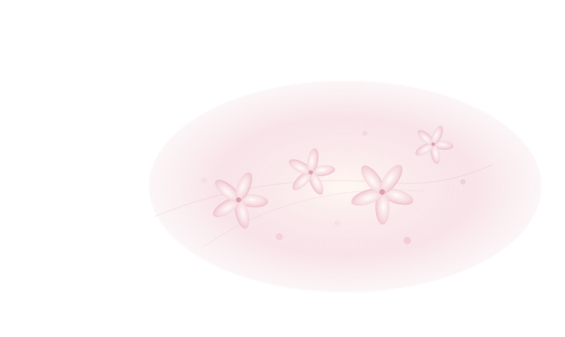

书角
读过的书，留下的话
02 / THOUGHTS随想
一些安静生长的文字
03 / OBJECTS物
收藏有来处的小物件
04 / IMPRESSIONS印记
被爱与时光留住的瞬间
About me
关于我
可以叫我“温柔”。但是，叫我什么都可以，因为这只是一个代号。
这是我的小空间，我希望可以在这里保留关于我的一切，和我对这个世界所有的感知。
谢谢你来到这里，希望能给你带来美好。

读过的书，留下的话
02 / THOUGHTS一些安静生长的文字
03 / OBJECTS收藏有来处的小物件
04 / IMPRESSIONS被爱与时光留住的瞬间
About me
可以叫我“温柔”。但是，叫我什么都可以，因为这只是一个代号。
这是我的小空间，我希望可以在这里保留关于我的一切，和我对这个世界所有的感知。
谢谢你来到这里，希望能给你带来美好。